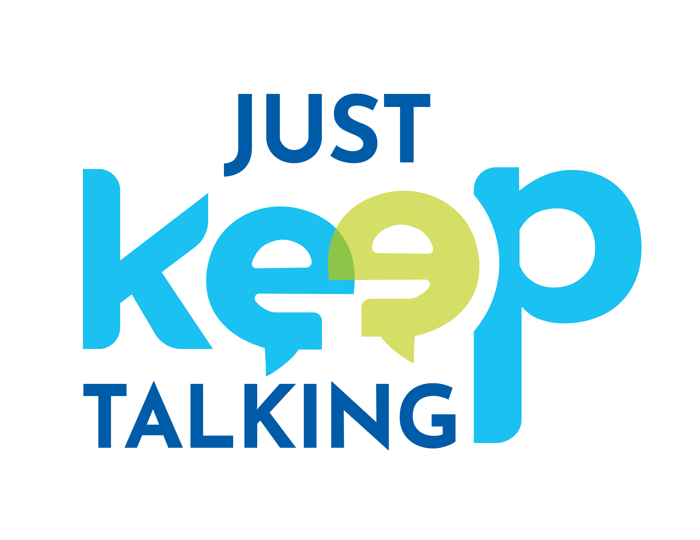

One person, one plan
Your goals shape the focus. You are not placed into a standard lesson path.

Private online English classes
Build the confidence to speak through one-on-one classes shaped around your goals, pace, and real life.
Personal plan · Private classes · 100% online
Progress looks different for everyone.
Your classes should, too.
A different way to move forward
If you studied grammar before but still freeze in conversation, you’re not alone. We turn that hesitation into confidence, one conversation at a time.
Your goals shape the focus. You are not placed into a standard lesson path.
You practice speaking extensively while grammar and other skills support the conversation.
Work with an assigned teacher at a consistent weekly time, completely online through Zoom.
How it works
Start on WhatsApp and arrange an intake conversation about your English, goals, and schedule.
Your learning plan is shaped around where you are now and what you need English to help you do.
Meet your teacher on Zoom at a consistent weekly time and build confidence through practice.
Choose your weekly rhythm
Choose the practice rhythm that works for your goals. The more often you meet, the more you save on every private class.
One-time enrollment fee: ₡15,000.
Good to know
Every class is one-on-one, conversational, and shaped around your goals, pace, and personal plan.
100% online using the Zoom platform. Join from wherever you feel comfortable and ready to talk.
Conversation leads the way. Grammar and other skills are woven in when they help you communicate more clearly.
Then you’re exactly who we want to talk to! You can practice without pressure, build from what you already know, and grow more confident one conversation at a time.
Your next conversation can start here